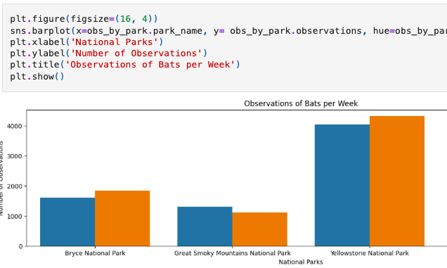

Data Analysis Projects
Biodiversity in National Parks
Analysis of biodiversity data from the U.S. National Park Service using Python, pandas, NumPy and Matplotlib.
View on GitHub NYC Tree Census & Income Dashboard
An interactive Tableau dashboard exploring how street-tree density relates to median income across New York City neighborhoods.
View Dashboard
Rotten Tomatoes Insights
Tableau dashboard exploring Rotten Tomatoes movie ratings, genres and trends.
Open dashboard
C Projects (42 Prague)
Libft
Custom implementation of core C standard-library functions—memory handling, strings and more.
View on GitHubFractol
A fractal visualizer built in C with MiniLibX, rendering Mandelbrot and Julia sets in real time.
View on GitHubPush Swap
A sorting algorithm visualizer written in C, designed to sort a stack of integers using a limited set of operations with the fewest possible moves. This project focuses on algorithm optimization, instruction efficiency, and stack-based data structures.
View on GitHub
Cub3D
A raycasting 3D game engine built in C using MiniLibX — inspired by Wolfenstein 3D. Features player movement, wall textures, doors, sprite rendering, and a fully navigable 3D environment.
View on GitHub